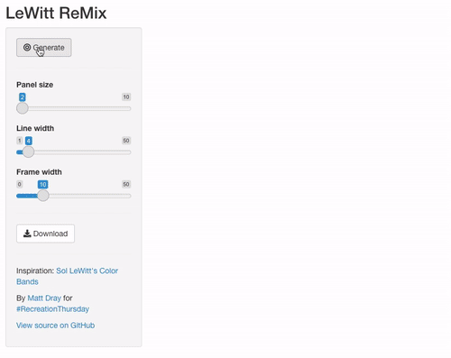
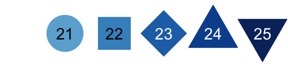
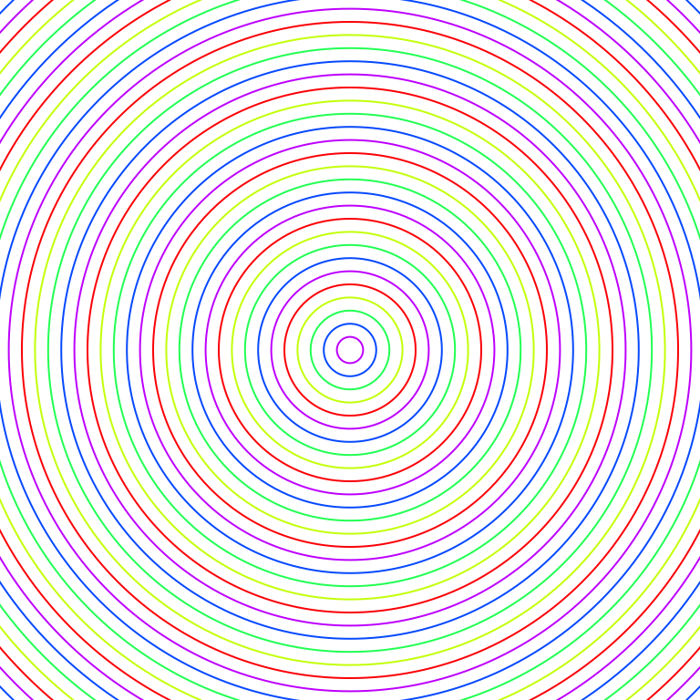
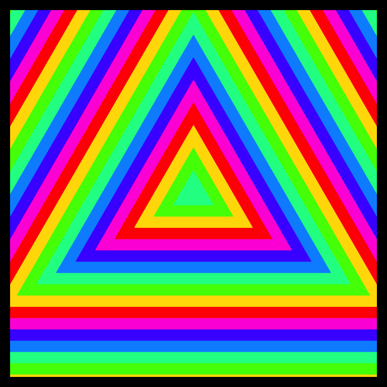
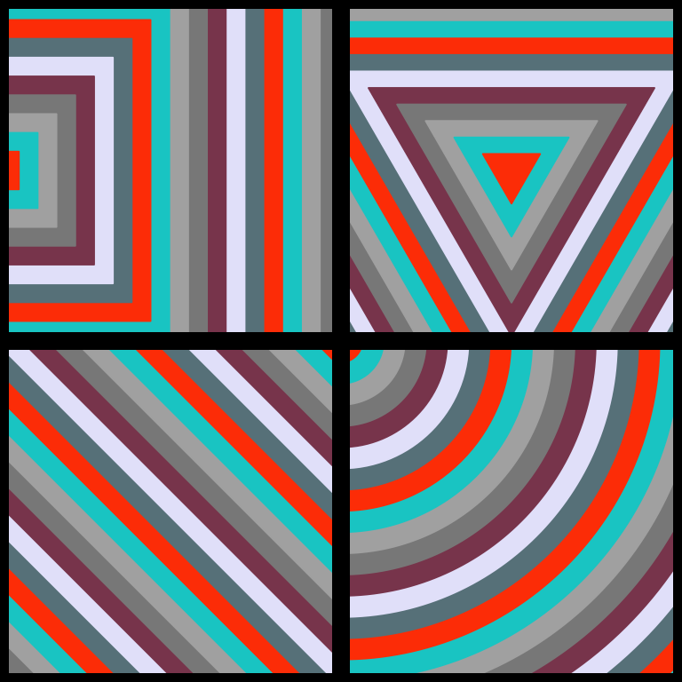
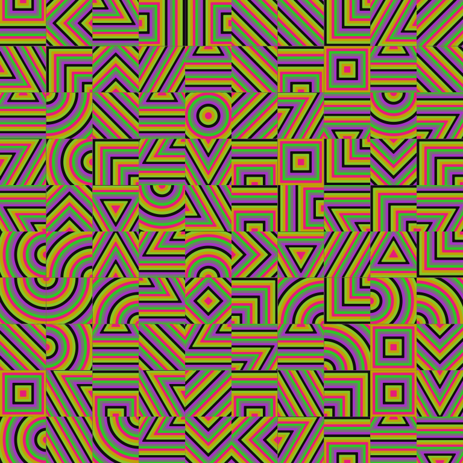
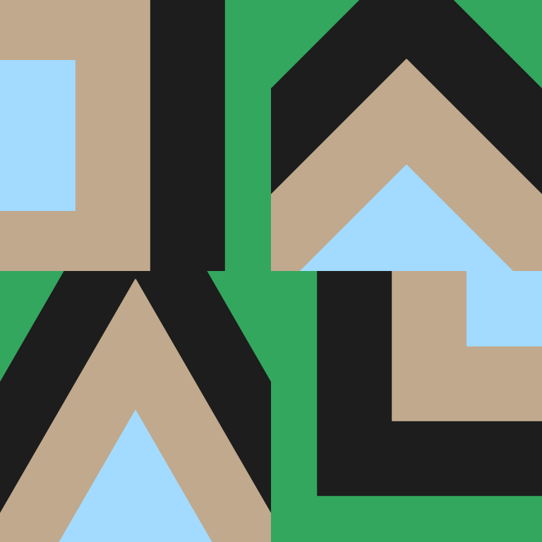
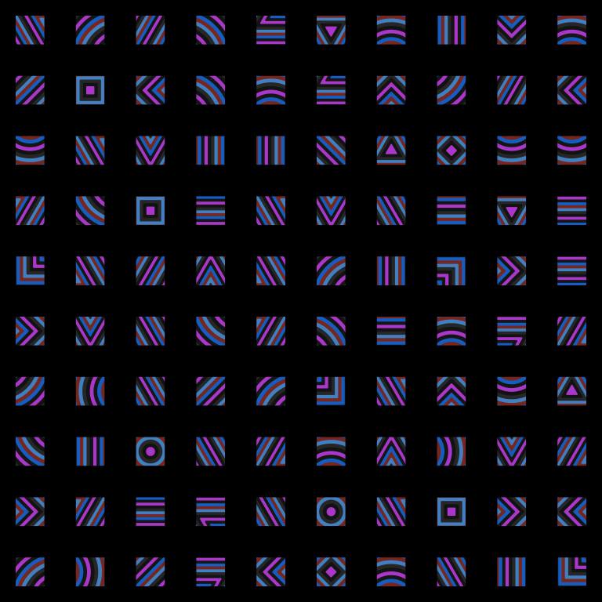
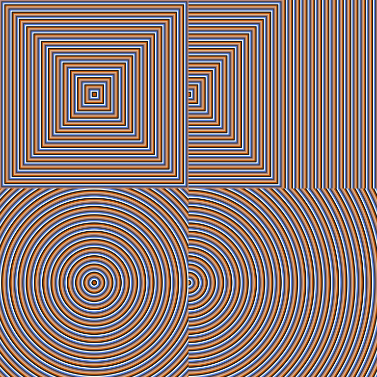

shiny::runGitHub(
"viz-recreation", "matt-dray", "main",
"2021-07-01_rt_lewitt/lewitt-remix-app"
)
LeWitt ReMix
The third #RecreationThursday challenge involved Sol LeWitt’s Colour Bands (2000), which you can see on this prints catalogue. In short, each piece is square and contains patterns of colourful concentric lines that are arranged into panels of varying shapes with black borders.
Rather than recreate his artworks exactly, I decided to riff on the approach with a (very basic) Shiny app, which adds different types of lines and some randomisation.
You can access it by clicking this button (until I take it down1):
Alternatively, download and launch it locally via an R session:
Or you can go to the app’s source on GitHub.
In the app, you can change a few parameters and then hit the ‘Generate’ button for a new variant, which can be downloaded to your computer. I’ve limited the inputs so that you get relatively ‘sensible’ outputs (whatever that means).
You could create something that looks similar to LeWitt’s original, or go off-piste and create a much larger number of panels or much thicker lines. Have fun!
Read on for an explanation and for some examples.
Approach
Once again, I’ve used only base R functions to generate the outputs, just like my previous #RecreationThursday attempt. I have nothing against other tools, I just don’t care much for dependencies.
The trick
I’ve used a cunning shortcut to mimic LeWitt: rather than draw any lines or shapes, I’ve just over-plotted points of decreasing size and variable colour with R’s built-in plotting characters. For example, 21 is a filled circle, 22 a square and so on. Here’s the shapes I used:

When several of these plotting points are stacked on the same origin, it gives the effect of concentric lines. Here’s an example of plotting 50 unfilled circles of decreasing size on the same point:
# Set variables
shape <- 21 # plotting character
shp_n <- 50 # number of points to plot
shp_x <- 2 # point size multiplier ('thickness')
pal <- rainbow(5) # colours
# Set margins to zero, see only the plot
par(mar = rep(0, 4))
# Plot concentric circles
plot(
x = rep(0, shp_n),
y = rep(0, shp_n),
axes = FALSE,
pch = shape,
cex = shp_x * shp_n:1,
col = pal
)
If these circles are filled from largest to smallest, it will give the impression that lines have been created, when really it is a stack of points. I’ve added in a ‘multiplier’ variable that increases the gap from the edge of one point to the edge of the next smallest. The larger that variable, the large the gap, which in the output makes it look like the ‘lines’ are thicker.
Functions
There are two custom functions in the app: one function uses this point-stacking principle to generate a single-panel LeWitt remix and the other function calls multiple of these panels into a square grid.2
The arguments include the plotting character (circle, diamond, etc), the origin position that the centre of the point-stack will take (named for cardinal directions, like NE to place the origin in the top-right), the colours, the number of shapes to overplot (you want enough to completely cover the plot surface), the apparent ‘thickness’ of the ‘lines’ in the output, and the width of the box3 that surrounds the image.
Function demos
So here’s a demo of the function4 that generates a single panel. It uses uses the triangle plotting characters, which originate in the centre and alternate through rainbow colours. This is not too dissimilar from LeWitt’s originals.
# Grab the functions from the repo
source("https://raw.githubusercontent.com/matt-dray/viz-recreation/main/2021-07-01_rt_lewitt/lewitt-remix-app/global.R")
# Demo: plot a single panel
just_lewitt(
shape = 24, # triangle plotting character
place = "C", # 'centre'
pal = rainbow(7), # colours
shp_n = 200, # number of points to plot
shp_x = 4, # 'line thickness'
box_w = 20 # outer box thickness
)
And below is a panel made of four calls to the single-panel function. Elements like shape and the placement of the origin point are randomised.
Also, rather than use LeWitt’s colouring scheme, I decided to randomise the colour palette by sampling seven colours from R’s built-in named colours(). This can produce some pretty garish results, but also some quite pleasing ones too. (I’m colourblind, so your mileage may vary.)
# Set a seed for reproducibility
set.seed(5)
# Set up a colour palette
my_pal <- sample(colours(), 7)
# Demo: plot a grid of randomised panels
just_lewitt2(
dimn = 2, # x and y dimensions of grid
pal = my_pal, # colour palette
shp_x = 4, # 'line thickness'
box_w = 10 # outer box thickness
)
This can end up looking like an eye-popping Magic Eye puzzle.
set.seed(7)
just_lewitt2(
dimn = 10,
pal = sample(colours(), 7),
shp_x = 1,
box_w = 0
)
Or a bit like semaphore.
set.seed(7)
just_lewitt2(
dimn = 2,
pal = sample(colours(), 7),
shp_x = 20,
box_w = 0
)
Or whatever this is.
set.seed(2)
just_lewitt2(
dimn = 10,
pal = sample(colours(), 7),
shp_x = 1,
box_w = 20
)
Uh-oh, I think I may have slipped through space-time.
set.seed(11)
just_lewitt2(
dimn = 2,
pal = sample(colours(), 7),
shp_x = 0.4,
box_w = 0
)
The Shiny app basically fills these function arguments with your inputs, providing some randomness with a new seed that’s generated with each click of the ‘Generate’ button or if you move any of the sliders.
You can control the number of panels in the grid, the ‘thickness’ of the lines (which, remember, is just the relative gap between the overlapping plot points) and the thickness of the border (I could have made this value respond to other inputs, but I particularly like ignoring ‘balance’ and choosing extremely thick borders, or none at all).5
I would love it if you tried out the app, used the ‘Download’ button to save a PNG copy6, and then showed me on Twitter.
Get involved
Check out #RecreationThursday on Twitter. It’s a community challenge to recreate an art piece selected each fortnight by a rotating curator.
The timetable, art pieces, curators and example alt-text are available in Sharla Gelfand’s RecreationThursday repo on GitHub.
Environment
Session info
Reuse
CC BY-NC-SA 4.0